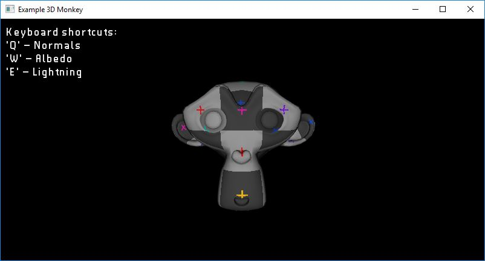

Example: 3D Monkey

The purpose of this example is to show how to load an obj model, texture, and a shader in order to render a 3D object using OpenGL.
Requires finegraphics, finemedia, and finemath module to run
#include <ffw/graphics.h>
#include <ffw/media.h>
public:
App(){
mouseDown = false;
}
~App(){
}
// Check if graphics components are compatible with OpenGL
std::cerr << "OpenGL used on this machine is too old! Vbo is not compatible!" << std::endl; return false;
}
std::cerr << "OpenGL used on this machine is too old! Shader is not compatible!" << std::endl; return false;
}
std::cerr << "OpenGL used on this machine is too old! Texture2D is not compatible!" << std::endl; return false;
}
std::cerr << "OpenGL used on this machine is too old! Font is not compatible!" << std::endl; return false;
}
// Start with mode: lightning
// mode 2 = lightning
// mode 1 = solid colors
// mode 0 = normals
viewMode = 2;
// Load font
// Default font included in FFW
std::cerr << "Failed to create font!" << std::endl;
return false;
}
// Load shader
try {
shader.createFromFile(this, "", "monkeyshader.vert", "monkeyshader.frag");
} catch(std::exception& e){
// Error while loading shader
std::cerr << "Failed to create shader!" << std::endl << e.what() << std::endl;
return false;
}
// Load texture
// Error while loading shader
std::cerr << "Failed to create texture from: uvgrid.bmp!" << std::endl;
}
// Load OBJ directly into VBO
std::cerr << "Failed to load monkey.obj!" << std::endl;
return false;
}
eyesPos.set(0.0f, 0.0f, 1.5f);
// This is not the most efficient way to calculate
// Model-View-Projection
// We are doing it this way just for the purpose
// of the example...
// get the aspect ratio of the window
ffw::Vec2i windowSize = this->getSize();
// create the projection matrix
// 60 deg field of view
// 0.1 near distance of frustum
// 1000.0 far distance of frustum
projectionMatrix = ffw::makeProjectionMatrix(60.0f, aspectRatio, 0.05f, 1000.0f);
// set the view matrix
//viewMatrix = ffw::Mat4x4f(1.0f);
viewMatrix = ffw::makeLookAtMatrix(eyesPos, ffw::Vec3f(0.0f, 0.0f, 0.0f), ffw::Vec3f(0.0f, 1.0f, 0.0f));
// set the model matrix
modelMatrix = ffw::Mat4x4f(1.0f);
glEnable(GL_BLEND);
glBlendFunc(GL_SRC_ALPHA, GL_ONE_MINUS_SRC_ALPHA);
return true;
}
// Blending is needed by the font
glClear(GL_COLOR_BUFFER_BIT | GL_DEPTH_BUFFER_BIT);
// Enable depth test
glEnable(GL_DEPTH_TEST);
// Begin shader program
shader.bind();
// bind monkey object
vbo.bind();
// bind grid texture
texture.bind();
// set uniforms and attribute pointers
// set the texture sampler to 0 (GL_TEXTURE0)
shader.setUniform1i(shader.getUniformLocation("sampler"), 0);
// set the position attribute to length 3 starting at position 0 in the vertex buffer
// Each vertex has 8 floats total: {Px, Py, Pz, Nx, Ny, Nz, U, V}
// Where P is position, N is normal and UV are texture coordinates
shader.setAttributePointerf(shader.getAttributeLocation("position"), 3, 8*sizeof(float), (void*)(0*sizeof(float)));
// set the normal attribute to length 3 starting at position 3 in the vertex buffer
shader.setAttributePointerf(shader.getAttributeLocation("normals"), 3, 8*sizeof(float), (void*)(3*sizeof(float)));
// set the texture coordinates attribute to length 2 starting at position 6 in the vertex buffer
shader.setAttributePointerf(shader.getAttributeLocation("texCoords"), 2, 8*sizeof(float), (void*)(6*sizeof(float)));
// set the model, view and projection matrices
shader.setUniformMatrix4fv(shader.getUniformLocation("model"), &modelMatrix[0], 1);
shader.setUniformMatrix4fv(shader.getUniformLocation("view"), &viewMatrix[0], 1);
shader.setUniformMatrix4fv(shader.getUniformLocation("projection"), &projectionMatrix[0], 1);
// set integer uniform mode
// Used to switch between the normal color, solid color, or lightning
shader.setUniform1i(shader.getUniformLocation("mode"), viewMode);
// draw whole object
shader.drawArrays(GL_TRIANGLES, 0, vbo.getSize()/24);
// Stop object shader
shader.unbind();
vbo.unbind();
// Disable depth test
// Depth test needs to be disabled in order to
// draw user interface or any other 2D graphics components
glDisable(GL_DEPTH_TEST);
// draw debug information
this->setDrawColor(ffw::rgb(0xFFFFFF));
this->drawString(10, 10, &font, "Keyboard shortcuts:\n'Q' - Normals\n'W' - Albedo\n'E' - Lightning");
}
font.destroy();
texture.destroy();
shader.destroy();
vbo.destroy();
}
}
if(mode == ffw::Mode::PRESSED){
switch(key){
default: break;
};
}
}
if(mouseDown){
int diff = mousex - oldmousex;
oldmousex = mousex;
eyesPos = eyesPos.rotateY(-diff);
viewMatrix = ffw::makeLookAtMatrix(eyesPos, ffw::Vec3f(0.0f, 0.0f, 0.0f), ffw::Vec3f(0.0f, 1.0f, 0.0f));
} else {
oldmousex = mousex;
}
}
}
else mouseDown = false;
}
// Get the aspect ratio of the window
float aspectRatio = width / float(height);
// create the projection matrix
// 60 deg field of view
// 0.1 near distance of frustum
// 1000.0 far distance of frustum
projectionMatrix = ffw::makeProjectionMatrix(60.0f, aspectRatio, 0.05f, 1000.0f);
}
}
}
this->shouldClose(true);
}
}
private:
// Object vertex buffer
ffw::Vbo vbo;
// Object shader
ffw::Shader shader;
// Grid texture
ffw::Texture2D texture;
// Model, view and projection matrices used in shader
ffw::Mat4x4f projectionMatrix;
ffw::Mat4x4f viewMatrix;
ffw::Mat4x4f modelMatrix;
// Font
ffw::TrueTypeFont font;
ffw::Vec3f eyesPos;
bool mouseDown;
int oldmousex;
int viewMode;
};
int main(int argc, char *argv[]){
// Instance to our app class
App app;
// set arguments
args.title = "Example 3D Monkey";
args.samples = 4;
// create window
if(!app.create(args, NULL)){
std::cerr << "Failed to create window!" << std::endl;
return 1;
}
// Run setup
if(!app.setup()){
std::cerr << "Failed to setup window!" << std::endl;
system("pause");
return 1;
}
app.setSingleBufferMode(true);
// The main window loop
while(app.shouldRender()){
app.renderFrame();
app.waitForEvents();
}
// destroy window, this will delete all graphics data used by the window.
// Must be called after the setup and before the graphics
// is terminated
app.destroy();
return 0;
}